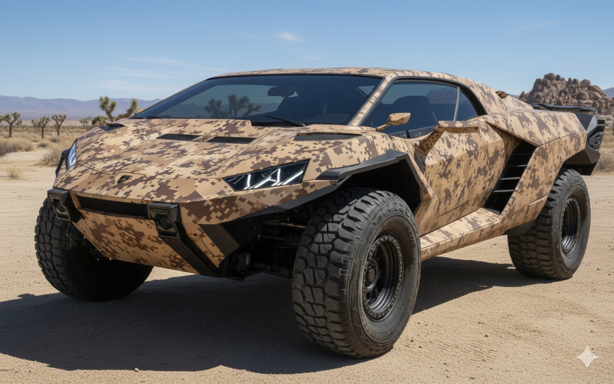

Mid-engine trophy truck architecture wrapped in aggressive Camaro roof lines and custom sheet metal styling.

The Build Concept: Named after the Arabic word for desert leopard, Nimr is a mid-engine off-road concept anchored on a high-travel trophy truck chassis. The body design retains an recognizable Camaro roofline while extensive custom sheet metal fabrication transitions the profile into sharp, aggressive Lamborghini-inspired angles. Finished in an stylized, non-authentic desert camouflage motif, paper registration remains pure Camaro to the California DMV.